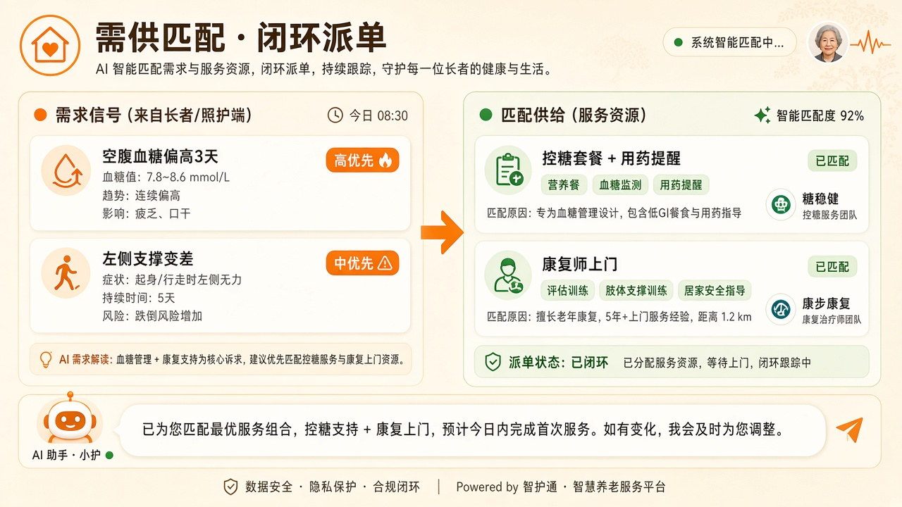
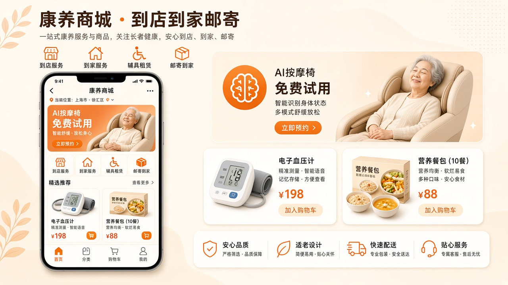
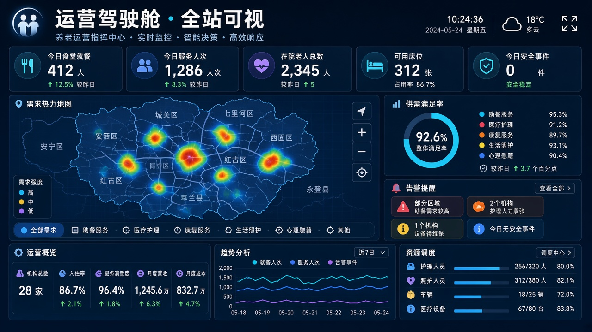

主要产品功能
把长者家里的真实需求看清楚，把站点能用的供给备齐全，再把对的服务接到同一个人、同一个星期里。 平台以「需智能 / 供智能 / 需供匹配」三条主线组织能力。
01 需智能
看清家里的事
双老家庭结构、病种、能力、居住与子女陪伴，形成需智能入口。
血糖、血压、睡眠、营养、运动、病程固化看板，异常分级提醒。
Barthel / 失能等级开口，评估→计划→履约→账单全链路节点可视。
把偏高血糖、偏高血压等信号翻译成控糖餐、防跌、康复等刚需清单。
02 供智能
备好用得上的资源
模板→实例→套餐三层供给；食堂结算锁定，禁止跨食堂核销。
慢病监测网、双病种配餐、卒中康复包、应急与日托按病种半径编排。
到店 / 到家 / 辅具租赁 / 邮寄到家；核销码与订单权益闭环。
食堂余量、康复时段、日托名额、设备体验预约统一可视。
03 需供匹配
把对的服务接到人
如「空腹血糖偏高 3 天」配对控糖套餐 + 用药提醒，状态可追踪。
康复加训、夜灯巡检、日托喘息、账单确认按周回写子女看板。
先防再卒中与跌倒，再稳血糖，同时减轻照护者负担。
子女不在身边时远程可视；超标体征与漏药自动推送。
04 AI 智伴
对话式入口档案问答、体征解读、附近食堂地图卡、追问推荐固化演示。
我家爸妈 / 附近食堂 / 上门照护 / 健康数据 / 社区活动一键问。
体征、趋势、睡眠、业务节点、供给、地图等结构化卡片进聊天气泡。
演示档固化林家数字；配置密钥后可走 DeepSeek 等兼容接口。
05 康养商城
C 端履约触达
到店服务、到家服务、辅具租赁、邮寄到家分区推荐。
包月订餐等到站按次核销；到店核销码、商家扫码校验。
Banner 活动、主题推荐流、智伴入口联动。
订单详情、退款模拟、售后申请等履约后链路。
06 运营驾驶舱
B 端全站可视
站点 / 人群 / 场景筛选，需求热力与供给缺口对照。
食堂就餐、托养、上门、团购、设备体验等核心 KPI。
长者档案、评估、用药托管、巡查适老化、请假复诊。
履约质量、投诉、补贴追溯、分账结算与对账导出。
功能对照表
产品能力 ↔ 演示入口| 主线 | 核心功能 | 演示入口 |
|---|---|---|
需智能 |
家庭画像、体征档案、能力评估、需求解析 | 智伴「打开爸妈的健康档案」「最需要什么照护」 |
供智能 |
服务要素/项目/套餐、四网供给、食堂锁定结算 | 智伴「平台要准备哪些供给」· 管理端服务套餐 |
需供匹配 |
信号配对、本周闭环、异常推送 | 智伴「需求和供给对上」 |
AI 智伴 |
对话调度、CUI 卡片、地图推荐 | agent.html |
康养商城 |
到店/到家/辅具/邮寄、核销履约 | index.html |
运营驾驶舱 |
需求总览、综合运营、机构健康管理 | 需求侧总览 · 运营大屏 |
截图为产品功能示意 · 交互演示以仓库内静态页与智伴固化对话为准